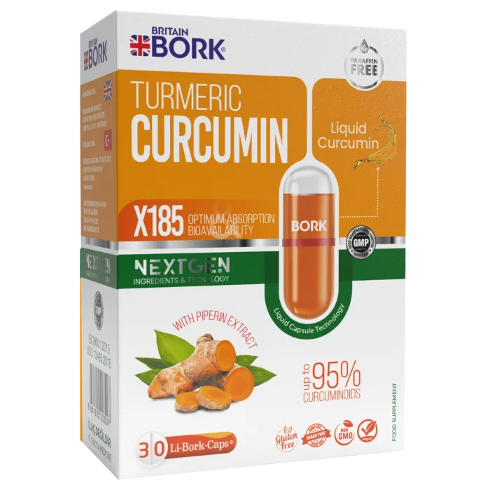

Sıvı, sıvı+tablet ve sıvı+pelet dolgulu kapsül teknolojisi.

İşlevsellik açısından gelişmişliğe sahip olan bu yeni teknoloji, birçok farklı bileşiğin formüle edilmesine yardımcı olmakla beraber biyoyararlanımı yüksek ve aktif içerikli bir ürün sunumu sağlar. Li-Bork-Caps, sıvı dolu sert kapsüllerden oluşur.
Bu teknoloji; biyoyararlılığın artırılması, tat ve kokunun maskelenmesi, uzun salınım ve çeşitli kombinasyon ürünlerin eldesi dahil olmak üzere, sağlık ve beslenme uygulamalarında işlevsel iyileştirmeler için rutin olarak kullanılmaktadır.
Li-Bork-Caps kapsül teknolojisi, görsel olarak çekici ve benzersiz görünümüyle tüketiciler üzerinde olumlu ve kalıcı bir izlenim oluştururken, tat ve hoş olmayan kokuları yumuşak kapsüllere göre daha iyi maskeler.
Li-Bork-Caps bir likit kapsül teknolojisidir. Günümüzde gıda takviyelerinde kullanılan vitamin, mineral, bitki ekstreleri ve omega gibi yağ bazlı ürünlerin birçok formu bulunur. Sektörde genelde toz form kullanılarak kapsül veya tablet üretilir. Ancak bu ürünlerin sıvı formları vücut için daha yararlıdır.
Çünkü kapsül, tablet ya da genel olarak toz formların vücuda alındıktan sonra kana karışıp hücrede emilebilir hale gelmesi yaklaşık 25-30 dakika sürer ve bu parçalanma sırasında ürün kayıpları da yaşanır. Sıvı formlarda ise ürün çözülmüş, yoğun konsantrasyonda bulunduğundan, vücuda alındıktan sonra 2-5 dakika arasında madde kaybı yaşanmadan emilim gerçekleşir. Vücudumuz sıvı formdaki aktif maddelerin %98'ini kullanabilirken, kapsül veya tablet formlarından sadece %39-53 oranında yararlanabiliyoruz.
21. yüzyılın son 10 yılında yaşanan pandemi ve çeşitli doğal felaketler nedeniyle kaliteli gıdaya erişimimiz kısıtlanmış durumda. Gıda takviyesi sektörü bu noktada harika bir destekçidir — tabii doğru formları kullanmak şartıyla. Bu yüzden daha kaliteli, daha etkili ve biyoyararlanımı yüksek BRITAIN BORK ürünlerini geliştirdik. BRITAIN BORK ürünleri, hem vitamin ve minerallerden hem de çeşitli faydalı yağların birleşiminden oluşan bir ürün grubuna sahiptir.
Bu ürünler, likit kapsül teknolojisi dediğimiz yeni ve nadir bir teknolojiyle üretilir. Bu teknolojiyi tercih etmemizin birkaç sebebi var. Öncelikle en büyük etken, faydalı yağları veya balık yağı gibi ürünleri softgel (yumuşak kapsül) formundan kurtarmaktı. Softgel ürünlerin üretim prosesinde kullanılan parafin, petrol ürünü olduğu için uzun süreli kullanımlarda insan sağlığını olumsuz etkileyebilir; vücutta birikerek toksik etki yaratabilir ve zehirlenmelere neden olabilir.
Bir diğer neden ise, parafin kaplı yumuşak kapsüllerde balık yağının veya çeşitli yağların oksijenle temasının %100 kesilememesi nedeniyle yağın kalitesinin ve yararlılığının düşmesidir. Likit kapsül teknolojisinde kullanılan kapsüller tamamen bitki bazlıdır; bu sayede vücutta kolaylıkla çözülür ve rahatlıkla atılır. Hava geçirmez oldukları için içerisindeki yağın kalitesini korur, kontaminasyonu engeller ve böylece biyoyararlanımı artırır.
Li-Bork-Caps® ürünleri GMP, ISO 9001/14001/22000 ve Halal sertifikalı tesislerde üretilir.
Sertifikaları Gör Li-Bork-Caps® Ürünlerini Gör